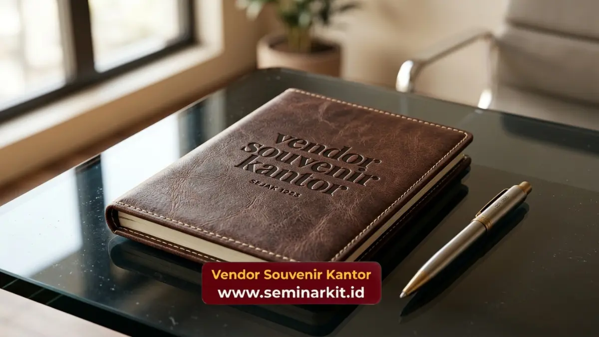

Standar kualitas merchandise resmi pemerintah wajib memenuhi kriteria ketahanan material, fungsionalitas tinggi, representasi visual yang akurat, serta kepatuhan terhadap regulasi pengadaan barang publik.
Produk yang didistribusikan atas nama negara membawa tanggung jawab moral untuk menunjukkan pengelolaan dana yang tepat guna, sehingga setiap barang harus mencerminkan nilai kualitas yang setara dengan investasi yang dikeluarkan.
Mengabaikan standar ini sama dengan mempertaruhkan kredibilitas instansi di mata masyarakat penerima.
- Durabilitas material adalah syarat mutlak untuk mencegah barang cepat rusak dan menurunkan citra institusi.
- Akurasi warna dan proporsi logo harus presisi sempurna tanpa toleransi kesalahan dimensi.
- Nilai fungsionalitas barang harus relevan dengan kebutuhan praktis audiens penerima sehari-hari
- Pengawasan kualitas (Quality Control) wajib dilakukan menyeluruh sebelum serah terima.
Mengapa Durabilitas Menjadi Kriteria Utama?
Durabilitas menjadi kriteria utama karena kerusakan dini pada barang berlogo instansi akan langsung memicu persepsi negatif publik terkait inefisiensi pengadaan dan rendahnya apresiasi lembaga.
Bayangkan jika sebuah instansi memberikan payung lipat sebagai cinderamata sosialisasi, namun rangka payung tersebut patah saat pertama kali digunakan di tengah hujan lebat.
Kejadian semacam ini bukan sekadar ketidaknyamanan, tetapi secara tidak sadar mengirimkan pesan bahwa institusi tersebut menggunakan barang murahan.
Oleh karena itu, ketahanan mekanis dan struktur material harus diuji kelayakannya. Rangka logam harus anti-karat, jahitan pada tas atau dompet harus menggunakan benang nilon bertegangan tinggi, dan lem pada barang-barang hardbox tidak boleh mudah mengelupas saat terpapar perubahan suhu ruangan.

Untuk memastikan durabilitas ini terpenuhi, panitia wajib menetapkan batas spesifikasi minimal pada dokumen pengadaan. Ketebalan gramasi bahan, tipe ritsleting, dan metode penyambungan material harus dinyatakan dengan jelas.
Kami sangat memahami betapa pentingnya menjaga integritas struktural setiap produk pesanan negara. Anda dapat mengandalkan keahlian dan proses quality control berlapis yang diterapkan oleh tim vendorsouvenirkantor.web.id untuk menghadirkan barang berkualitas prima di setiap kesempatan.
Bagaimana Memastikan Akurasi Visual Identitas Lembaga?
Akurasi visual identitas lembaga dapat dipastikan melalui sinkronisasi brand guideline resmi dengan metode cetak mutakhir yang mencegah distorsi warna maupun distorsi proporsi lambang negara.
Identitas visual, terutama logo institusi negara dan kementerian, memiliki proporsi geometris dan filosofi warna yang dilindungi ketat. Kesalahan mencetak warna biru kementerian menjadi warna biru yang berbeda dapat dianggap sebagai kesalahan prosedural yang serius.
Oleh sebab itu, kalibrasi mesin cetak, penentuan kode warna pantone, dan pemilihan teknik semat (seperti bordir komputer presisi tinggi atau UV printing) harus dikawal ketat. Bordir untuk lambang yang rumit membutuhkan tingkat kerapatan benang yang sangat spesifik agar tulisan kecil pada logo tetap dapat terbaca dengan jelas.
Selain masalah warna dan kerapatan, penempatan logo juga memiliki standar tersendiri. Logo tidak boleh diletakkan di area lipatan yang berpotensi membuatnya tertekuk, atau di area yang paling cepat aus karena gesekan tangan.
Area representasi ini harus steril dari ornamen desain lain yang bertabrakan. Untuk memastikan proses krusial ini berjalan tanpa celah, pastikan Anda hanya bermitra dengan profesional berpengalaman. Percayakan produksi berskala masif dengan akurasi logo 100 persen kepada vendorsouvenirkantor.web.id yang dilengkapi teknologi pengerjaan presisi modern.
Mengapa Fungsionalitas Mengalahkan Estetika Murni?
Fungsionalitas mengalahkan estetika murni karena barang yang hanya indah dipandang tetapi tidak berguna cenderung lebih cepat dilupakan atau dibuang oleh penerimanya.
Pemerintah bukan penjual barang seni koleksi, melainkan administrator pelayanan publik. Oleh karena itu, barang apresiasi yang diberikan harus memiliki karakter melayani kebutuhan penggunanya.
Sebuah jam meja, kalender, tumbler anti-bocor, atau tas kerja tahan air memiliki utilitas harian. Semakin sering barang tersebut digunakan untuk mempermudah pekerjaan sehari-hari wajib pajak atau mitra kerja, semakin berhasil fungsi komunikasinya.
Estetika tetap penting sebagai daya tarik awal, namun fungsionalitaslah yang memperpanjang usia pakai (lifetime value) dari merchandise tersebut.
Menemukan keseimbangan antara desain luar yang indah dan fungsi dalam yang solid membutuhkan riset produk yang matang.
Produk harus dirancang secara ergonomis, pas di genggaman, ringan dibawa, namun kokoh saat digunakan. Untuk mengeksplorasi lini produk yang memadukan keindahan desain profesional dengan fungsionalitas kelas atas, Anda tidak perlu repot mencari ke berbagai tempat.
Segera wujudkan konsep ideal Anda dan lakukan pemesanan secara komprehensif melalui layanan korporat kami di vendorsouvenirkantor.web.id.

Banner promosi: klik gambar untuk langsung terhubung ke WhatsApp tim sales.